本页展示批处理实际报告；是否执行、是否完成以各行状态为准，不把首帧预检当作整段成功。仅替换模型层，没有升级实测状态笛卡尔闭环，没有解锁底盘。
单一参考世界变换，不逐段重新居中。following 是相对最后发布命令的差，没有驱动确认，不等于已识别的因果占比。初始物理反馈可能不同，不能据此断言精度改善来自后端。
首帧解策略：各次独立 BioIK，存在分支混杂。
原始运行状态：stopped_after_failure；名义命令验收：not_fully_passed。完整协议、指标与输入哈希 · CSV · 实验说明
完整命令审计通过 9 项，加速度审计不完整 0 项。运行完成不等于约束全部通过；HOLD 补充审计见 JSON。
| episode | backend | repeat | execution | command audit | HOLD audit | commands | misses | IK P95 ms | cycle P95 ms | error |
|---|---|---|---|---|---|---|---|---|---|---|
| 000 | urdf | 1 | passed | passed | passed | 1250 | 0 | 4.821 | 13.981 | |
| 000 | pinocchio | 1 | passed | passed | passed | 1250 | 0 | 2.485 | 11.225 | |
| 001 | urdf | 1 | passed | passed | passed | 1032 | 0 | 4.822 | 14.319 | |
| 001 | pinocchio | 1 | passed | passed | passed | 1032 | 0 | 2.374 | 10.259 | |
| 002 | urdf | 1 | passed | passed | passed | 1239 | 0 | 4.286 | 13.154 | |
| 002 | pinocchio | 1 | passed | passed | passed | 1239 | 0 | 2.374 | 10.432 | |
| 000 | pinocchio | 2 | passed | passed | passed | 1250 | 0 | 2.370 | 10.646 | |
| 000 | urdf | 2 | passed | passed | passed | 1250 | 0 | 4.833 | 15.229 | |
| 001 | pinocchio | 2 | passed | passed | passed | 1032 | 0 | 2.365 | 10.517 | |
| 001 | urdf | 2 | failed | unavailable | unavailable | 847 | 0 | Joint position/velocity/acceleration bounds are infeasible | ||
| 002 | pinocchio | 2 | not_run | unavailable | unavailable | 0 | ||||
| 002 | urdf | 2 | not_run | unavailable | unavailable | 0 |
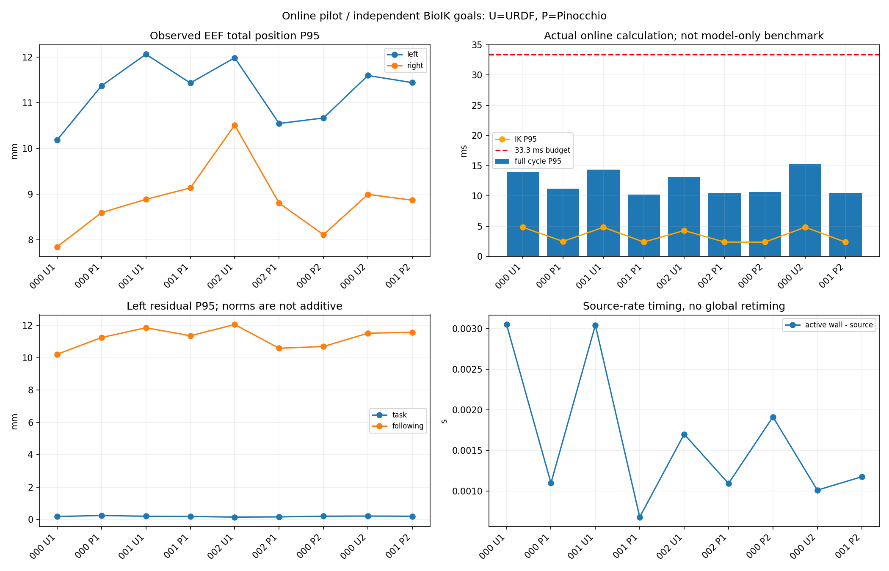
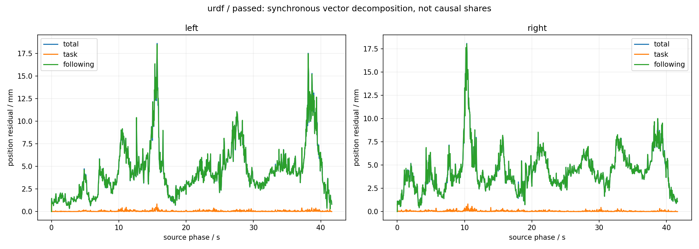
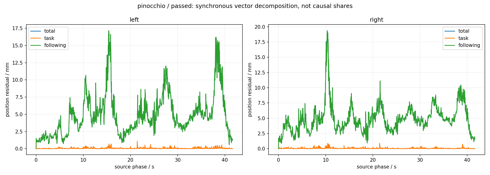
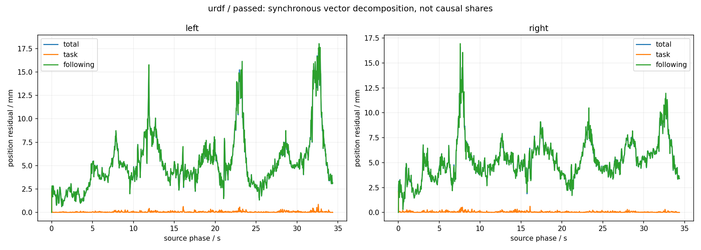
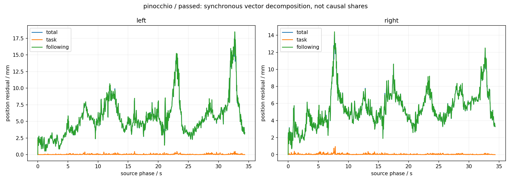
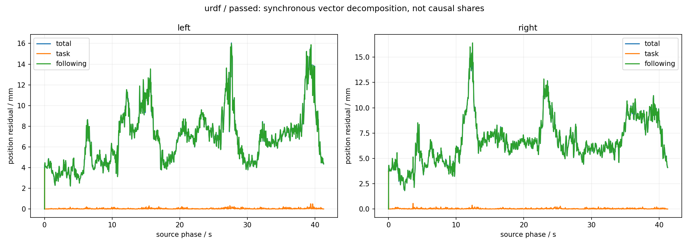
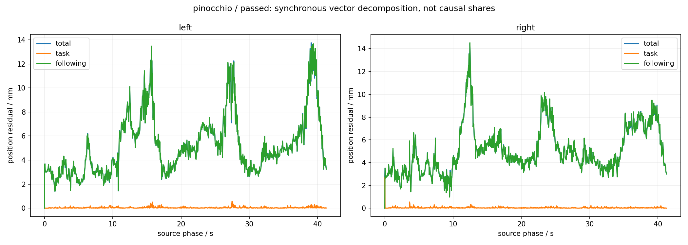
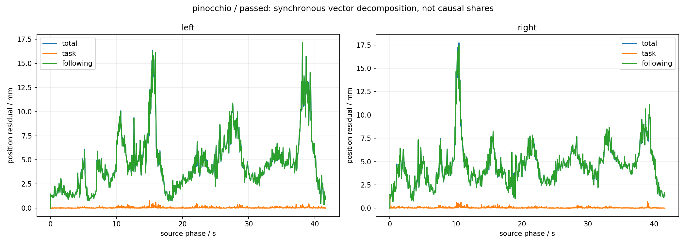
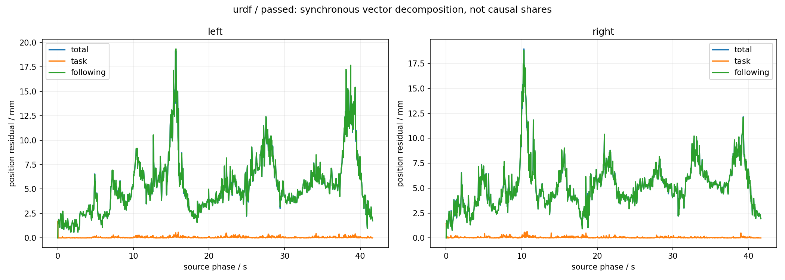
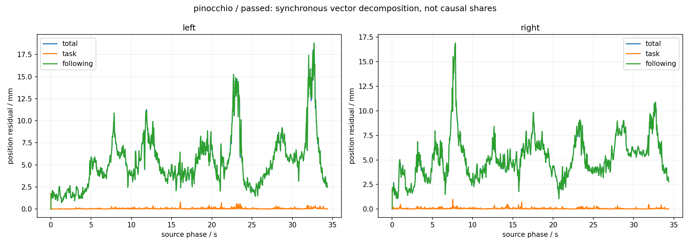
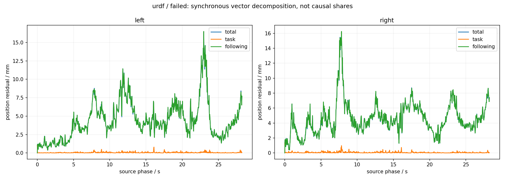